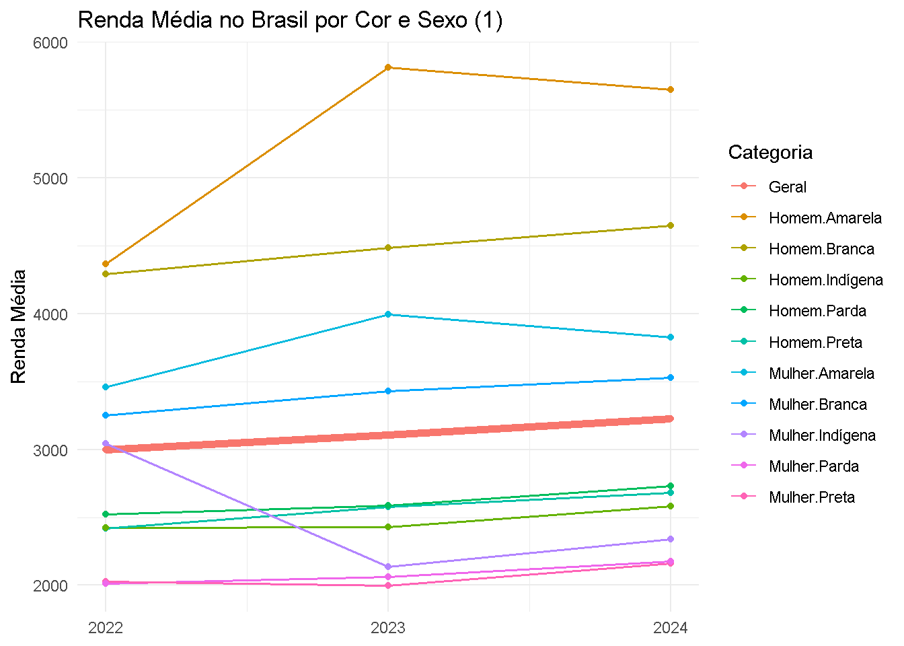
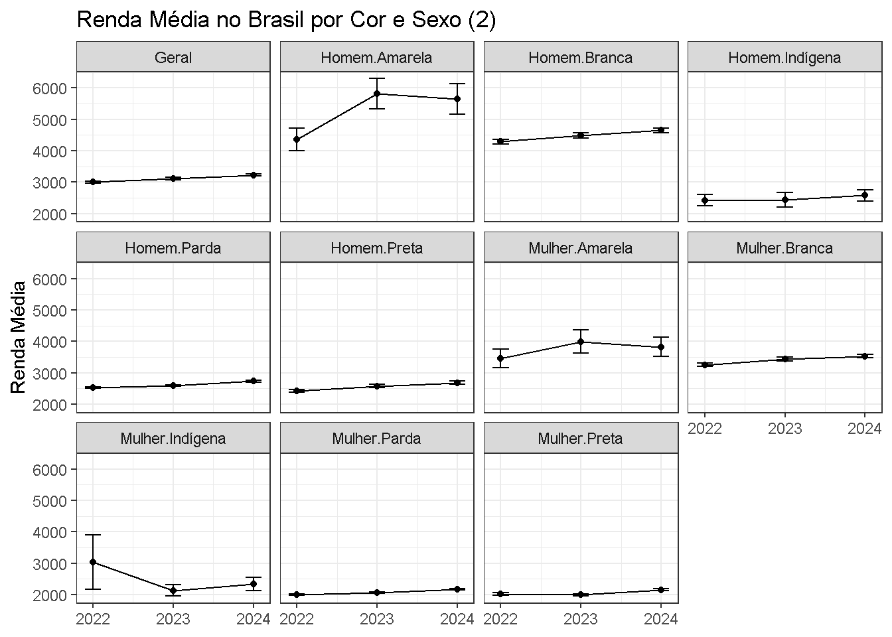
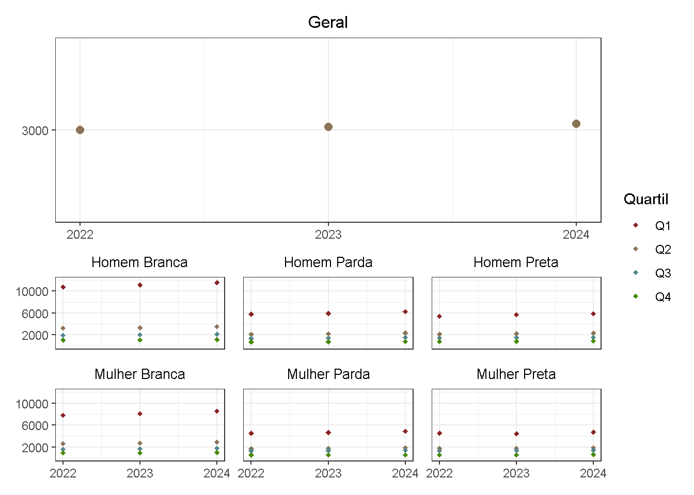

lapply(list("survey", "tidyverse", "PNADcIBGE", "future", "future.apply", "progressr", "data.table", "patchwork", "kableExtra"), function(x) {library(x, character.only = TRUE)})PNADc - Renda
1 Análises de Renda no Brasil pela PNAD Contínua Anual (2022-2024)
1.1 Código
1.1.1 Pacotes Utilizados
1.1.2 Variáveis
variaveis <- c("Ano", "UF", "V1008", "V1014", "V1023", "V1032",
"V2001", "V2003", "V2005", "V2007", "V20081", "V2009", "V2010",
"VD3004", "VD3005",
"V4009", "V4039", "V4040", "V40401", "V40402", "V40403", "VD4008", "VD4013", "VD4019", "VD4031",
"VD5010") 1.1.3 Funções
carregar_dados <- function(ano) {
get_pnadc(year = ano, interview = 1, vars = variaveis, defyear = 2024)
}
calcula_media <- function(design) {
design <- subset(design, cor_raça != "Ignorado")
design <- update(design,
Renda_dom = rendimento_habitual_domicilio * CO2,
Renda = rendimento_habitual * CO2)
renda_ano <- svyby(
formula = ~Renda,
by = ~interaction(sexo, cor_raça),
design = design,
FUN = svymean,
na.rm = TRUE
)
renda_ano <- renda_ano %>%
rename(Categoria = `interaction(sexo, cor_raça)`) %>%
mutate(Categoria = as.character(Categoria))
renda_media <- svymean(x = ~Renda, design = design, na.rm = TRUE)
renda_geral <- data.frame("Geral", coef(renda_media), SE(renda_media))
colnames(renda_geral) <- colnames(renda_ano) # garante consistência
renda_ano <- rbind(renda_ano, renda_geral)
rownames(renda_ano) <- NULL
gc()
return(renda_ano)
}
calcula_quartil <- function(dados) {
dado <- dados
dado <- subset(dado, !is.na(rendimento_habitual) & !is.na(sexo) & cor_raça != "Ignorado")
dado <- transform(
dado,
Renda = rendimento_habitual * CO2,
Renda_dom = rendimento_habitual_domicilio * CO2,
Categoria = interaction(sexo, cor_raça)
)
quartis <- svyby(
~Renda,
~Categoria,
dado,
FUN = svyquantile,
quantiles = c(0.25, 0.5, 0.75)
)
dado_df <- as.data.frame(dado$variables)
dado_df <- left_join(dado_df, quartis, by = "Categoria")
quartil_geral <- svyquantile(
x = ~Renda,
design = dado,
quantiles = c(0.25, 0.5, 0.75),
ci = FALSE
)
quartil_geral <- as.data.frame(quartil_geral[["Renda"]])
renda_media <- svymean(~Renda, dado)
dado_df <- dado_df %>%
select(Categoria, Renda, Renda.0.25, Renda.0.5, Renda.0.75) %>%
mutate(Categoria = as.character(Categoria))
media_geral <- data.frame(
Categoria = "Geral",
Renda = as.numeric(renda_media["Renda"]),
Renda.0.25 = as.numeric(quartil_geral[1]),
Renda.0.5 = as.numeric(quartil_geral[2]),
Renda.0.75 = as.numeric(quartil_geral[3]),
Quartil = case_when(
as.numeric(renda_media["Renda"]) <= as.numeric(quartil_geral[1]) ~ "Q4",
as.numeric(renda_media["Renda"]) <= as.numeric(quartil_geral[2]) ~ "Q3",
as.numeric(renda_media["Renda"]) <= as.numeric(quartil_geral[3]) ~ "Q2",
TRUE ~ "Q1"
)
)
dado_df$Categoria <- factor(dado_df$Categoria)
dado_df <- dado_df %>%
mutate(
Quartil = case_when(
Renda <= Renda.0.25 ~ "Q4",
Renda <= Renda.0.5 ~ "Q3",
Renda <= Renda.0.75 ~ "Q2",
TRUE ~ "Q1"
)
)
dado_df <- full_join(dado_df, media_geral)
dado_df$Renda <- as.numeric(dado_df$Renda)
resultado <- dado_df %>%
group_by(Categoria, Quartil) %>%
summarize(Media_Renda = mean(Renda)) %>%
mutate(Quartil_Geral = case_when(
Media_Renda <= as.numeric(quartil_geral[1]) ~ "q4",
Media_Renda <= as.numeric(quartil_geral[2]) ~ "q3",
Media_Renda <= as.numeric(quartil_geral[3]) ~ "q2",
TRUE ~ "q1"
))
return(resultado)
}
# Função para reordenar categorias condicionalmente após pivot_wider
pivot_reorder <- function(data, ano, variavel, categoria, valor, vars_to_reorder, decrescente = TRUE) {
ultimo_ano <- as.character(max(as.numeric(pull(data, {{ano}})), na.rm = TRUE))
var_levels <- data %>% pull({{variavel}}) %>% unique()
data %>%
mutate(
{{categoria}} := as.character({{categoria}})
) %>%
pivot_wider(
names_from = {{ano}},
values_from = {{valor}}
) %>%
group_by({{variavel}}) %>%
mutate(
{{categoria}} := if (first({{variavel}}) %in% vars_to_reorder) {
fct_reorder(
.data[[as.character(rlang::ensym(categoria))]],
as.numeric(.data[[ultimo_ano]]),
.desc = decrescente
)
} else {
factor(
.data[[as.character(rlang::ensym(categoria))]],
levels = unique(.data[[as.character(rlang::ensym(categoria))]])
)
}
) %>%
ungroup() %>%
arrange(
factor(.data[[as.character(rlang::ensym(variavel))]], levels = var_levels),
.data[[as.character(rlang::ensym(categoria))]]
)
}1.2 Gráficos
1.2.1 Análise Racial e de Gênero


1.2.2 Renda Média dos Quartis por Categoria de Cor e Sexo

1.3 Tabela Descritiva
| 2022 | 2023 | 2024 | |
|---|---|---|---|
| Cor ou Raça | |||
| Branca | 42.80 | 42.37 | 42.01 |
| Preta | 10.59 | 10.59 | 10.72 |
| Amarela | 0.81 | 0.70 | 0.64 |
| Parda | 45.35 | 45.88 | 46.15 |
| Indígena | 0.44 | 0.46 | 0.48 |
| Nível de Instrução | |||
| Sem instrução e menos de 1 ano de estudo | 7.93 | 7.69 | 7.45 |
| Fundamental incompleto ou equivalente | 32.25 | 31.62 | 30.97 |
| Fundamental completo ou equivalente | 7.54 | 7.42 | 7.27 |
| Médio incompleto ou equivalente | 7.25 | 7.12 | 7.00 |
| Médio completo ou equivalente | 26.55 | 27.26 | 27.90 |
| Superior incompleto ou equivalente | 4.44 | 4.35 | 4.36 |
| Superior completo | 14.04 | 14.54 | 15.04 |
| Número de Trabalhos | |||
| Um | 96.51 | 96.72 | 96.29 |
| Dois ou mais | 3.49 | 3.28 | 3.71 |
| Posição no Trabalho Principal | |||
| Empregado no setor privado | 49.96 | 50.72 | 51.18 |
| Conta-própria | 25.92 | 25.39 | 25.22 |
| Empregado no setor público | 12.08 | 12.15 | 12.26 |
| Trabalhador doméstico | 5.96 | 6.03 | 5.78 |
| Empregador | 4.39 | 4.29 | 4.26 |
| Trabalhador familiar auxiliar | 1.70 | 1.42 | 1.30 |
| Faixa de Horas Trabalhadas | |||
| Até 14 horas | 3.78 | 3.76 | 3.61 |
| 15 a 39 horas | 20.18 | 19.89 | 19.77 |
| 40 a 44 horas | 53.61 | 55.38 | 55.28 |
| 45 a 48 horas | 9.67 | 9.34 | 9.37 |
| 49 horas ou mais | 12.76 | 11.62 | 11.96 |
| Faixa de Renda (R$) | |||
| Até 1500 | 47.57 | 42.46 | 37.22 |
| 1501 a 3000 | 31.78 | 34.90 | 36.85 |
| Acima de 3000 | 20.64 | 22.65 | 25.93 |